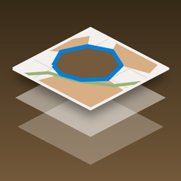
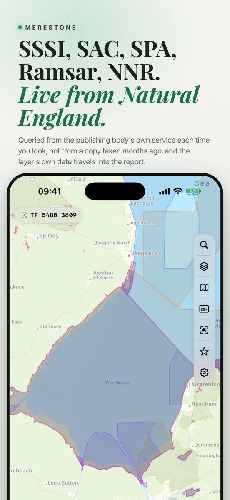
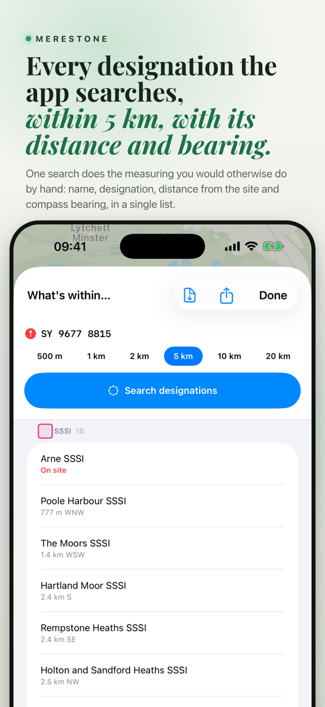
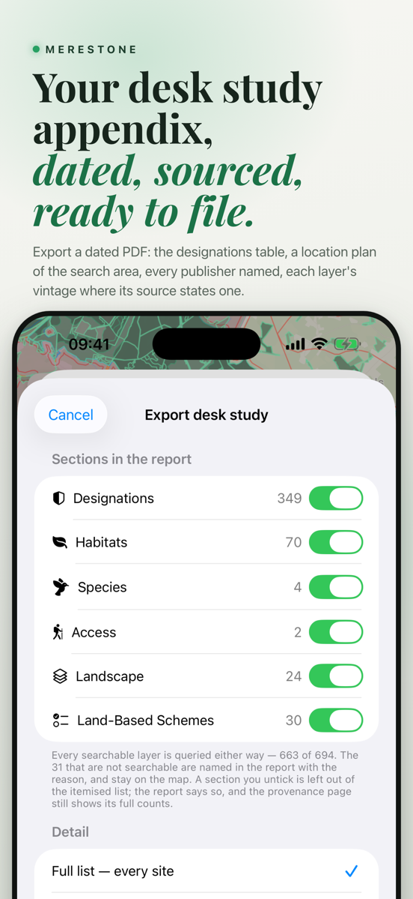
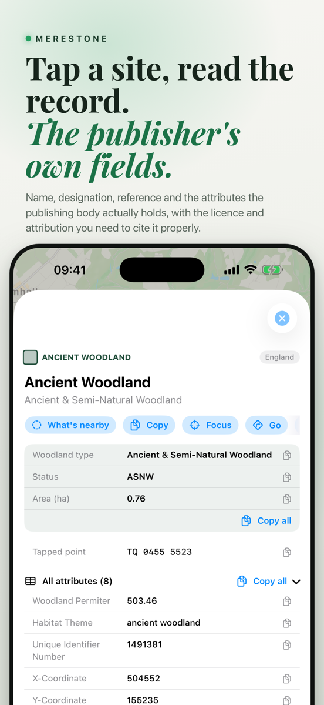
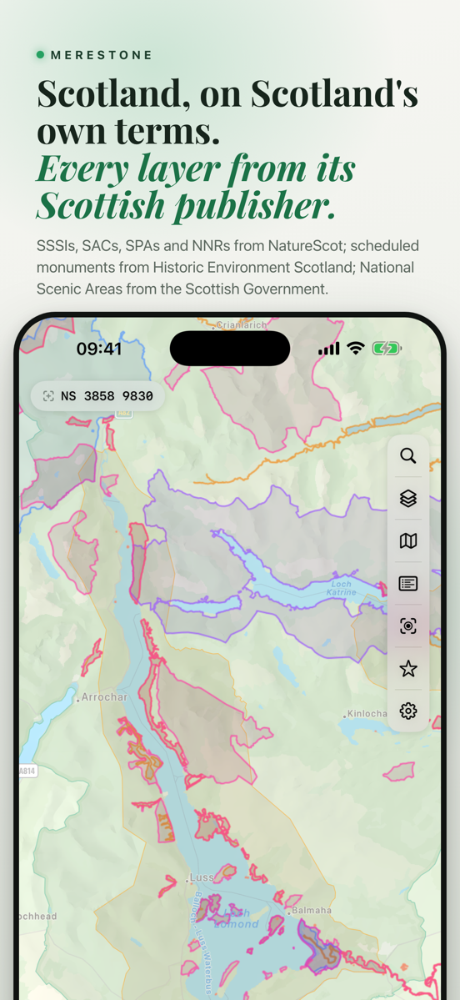
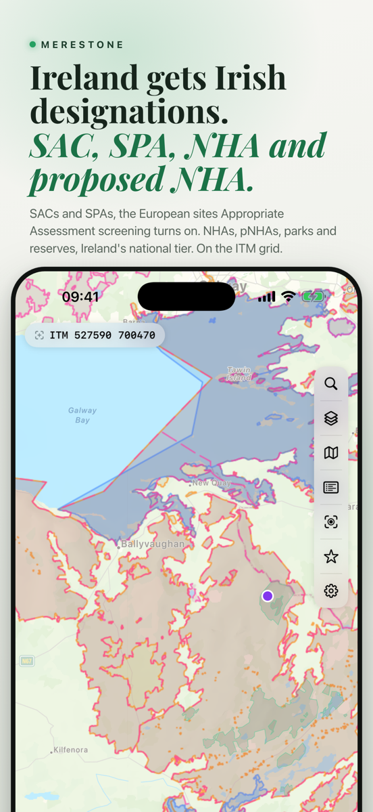

Merestone
Every statutory designation on one map, in the field, with no signal.
Built, and with Apple for review





Merestone puts statutory environmental designations on one map, on your phone, in the field, with or without a signal. The United Kingdom, Ireland, Spain and Portugal, with every layer drawn straight from the agency that publishes it.
A desk study in seconds
Drop a pin, choose a radius, and every designation inside it comes back sorted by distance, with anything on site flagged. Distances and bearings are measured, not eyeballed off a screen.
The report, already written
Export a dated PDF or text extract with a site plan, every record with its distance, direction and source, and just as importantly the layers that were checked and found nothing in. Choose which sections to include before you export.
What is on the map
- SSSI and SSSI Units, SAC, SPA and Ramsar sites
- National and Local Nature Reserves, National Parks and AONB
- Ancient woodland, the Priority Habitat Inventory, wood pasture and traditional orchards
- Open access land, listed buildings and scheduled monuments
- Protected areas, geological heritage and walking routes in Ireland, Spain and Portugal
- England, Scotland, Wales, Northern Ireland, Ireland, Spain and Portugal, with the same map, searches and report throughout
Works with no signal
Download any layer, or the whole country, and it keeps working out of signal. Merestone uses live data when you have a connection and falls back to your download when you do not, and it says which it used, on screen and in the report.
Built for the way the work happens
- Grid references in the system each country actually uses, and a search that accepts them
- Presets for desk study, woodland, wetland, coastal and species work, or save your own
- Favourites with notes, synced through your own iCloud with no account and no server
- An Apple Watch app for what is around you right now
- One purchase per country, covering iPhone, iPad, Mac and Watch
Merestone is coming
It is built and with Apple for review. It will appear here the day it lands.
Built, and with Apple for review